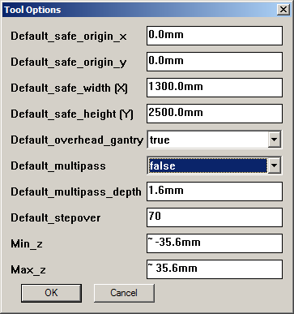

After install...
Back to help index
 Now visit the "Tools|Phlatboyz|Options|Tool Options" menu item as illustrated at right.
Now visit the "Tools|Phlatboyz|Options|Tool Options" menu item as illustrated at right.
If you have a flat bed machine you will want to set the
Default_cut_depth_factor to 100%
This will prevent it cutting into the table. A cut depth factor greater 100% will cut through the material and into the table.
After installing Sketchucam all features will work without further setup. However, there are some settings you will want to change to suite your machines size and capabilities.
 To make these changes you need to access the "Tools|Phlatboyz|Options|Machine Options" menu item as illustrated at right.Things you may need to change
- Default_safe_width (X)
- Set this to the largest workpiece your machine can take in the X direction.
- Default_safe_height (Y)
- Set this to the largest workpiece Y size.
- Default_overhead_gantry
- If all you have is a Phlatprinter, set this to false. If all you have is a gantry type machine, set this to true. If you have both styles, set to the one you use the most.
- Min_z
It is VERY IMPORTANT that you get these settings correct.
Do NOT set Min_Z to zero unless you also set Default_tabletop is Z-Zero on the Misc Options dialog to TRUE, and NEVER change it
in the parameters dialog. Failing to do this correctly will result in faulty G-code generation.
Min_z = -maxZtravel
Max_z = maxZtravel
are the preferred settings, allowing both 'material top' and 'table top' as Z-zero to work properly. - Set this to negative (-) your Z travel. G-code will never contain negative Z travel more than this figure.
- Max_z
- Set this to your Z travel. G-code will never contain Z travel more than this figure.
Now visit the "Tools|Phlatboyz|Options|Tool Options" menu item as illustrated at right.If you have a flat bed machine you will want to set the
Default_cut_depth_factor to 100%
This will prevent it cutting into the table. A cut depth factor greater 100% will cut through the material and into the table.
Thank you for your interest in the Phlatboyz project. Please take the time to visit the Phlatforum for lots of great people sharing great ideas and designs created with SketchUcam on their Phlatboyz machines!